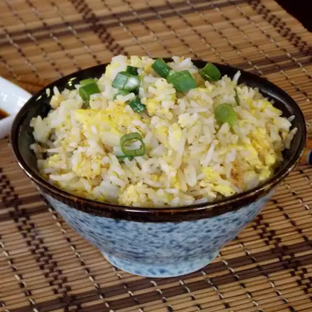

Breakfast Rice

Description
This breakfast rice recipe is quick to make and delicious.
Adjust the amount of ingredients for your hunger needs!
Ingredients
- 1 teaspoon vegetable oil
- 1 cup cold cooked rice
- 1 egg
- 2 green onions, sliced
- 2 teaspoons soy sauce
Steps
- Heat oil in a large skillet over medium-high heat.
- Spread rice in a flat layer in hot oil; cook until crispy on the bottom. (2-3 minutes)
- Stir egg into rice until scrambled. (~2 minutes)
- Sprinkle green onions on top and season with soy sauce.
- Serve & enjoy your quick delicious asian breakfast.